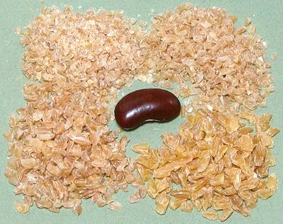

Bulgur Wheat

[Bulgur (Turk); Bollgur (Albania); Pligouri, Pourgouri (Greek);
Gurgur (Aramaic); Bulgoor (Armenia); Cerealis (Rome); Arisah (Biblical);
Triticum durum (sometimes other varieties)]
Bulgur is sometimes called "cracked wheat", but not at all
interchangeable with regular cracked wheat. For bulgur, whole wheat
kernels are soaked, then boiled or steamed and dried. When dry, the hulls
and some of the bran are removed (as little as 5%) after which they are
crushed and sorted to various mesh sizes. This form cooks much faster
than cracked wheat and can be used uncooked (just soak well). As with
parboiled rice, some of the bran nutrients are driven deeper into the
berry for better nutrition. Bulgur is much used in the cuisines of
southeastern Europe, Anatolia, the Caucasus, the Middle East, Central
Asia, North Africa, ancient Rome and the Levant, The photo shows #1
and #2 (top row) and #3 and #4 (bottom row).
Originally a specialty of the Armenians and Assyrians, this method of
treating wheat was also known to the Mongoles. Bulgar was carried far and
wide, first by the Romans, then by the Ottoman Empire. Because a minimum
amount of the bran is milled off, the USDA classifies bulgur as a whole
wheat product.
More on Wheat.
In Turkey there are two grades:
- Köftelik: Fine grind for Kofta
- Pilavlik: Coarse grind for Pilaf
In North America thre are five grades, the first four of which are
common.
- #1: Fine - often mixed with ground lamb to make kibbe.
- #2: Medium - used for tabouli
- #3: Medium Coarse - used for pilafs, casseroles, baked
dishes.
- #4: Coarse - used for soups - not as common as #3.
- #5 Very coarsely crushed - almost whole grains. Not common.
Buying:
Bulgur can be found packaged and sometimes in
bulk in markets serving communities from Southeast Europe,
Turkey, Armenia, the Levant, the Middle East and North Africa. Ethnic
markets will probably have it in grades from #1 to #4. Preferably buy
from a source with high turnover.
Storing:
Because bulgur contains some of the oils from
the raw wheat, it is subject to rancidity. In a tightly sealed container
in a cool place it will be usable up to 4 months.
Cooking:
Bulgur can be used uncooked (it has already
been fully cooked), it just needs a bit of soaking. Cooking should be
until bulgur is tender but not mushy. Timing will depend on coarsness,
so check for doneness. Like pasta, it should still have just a little
bite.
gr_bulgz 100219 - www.clovegarden.com
©Andrew Grygus - agryg@clovegarden.com - Photos on this
page not otherwise credited are © cg1 -
Linking to and non-commercial use of this page permitted